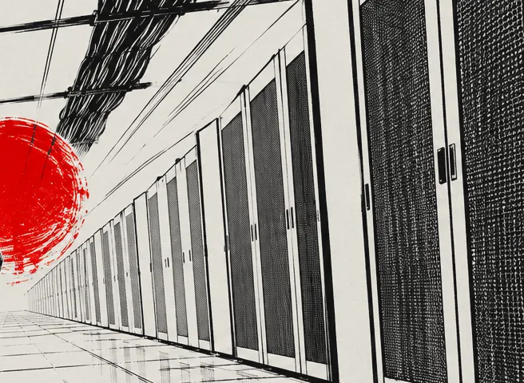

Volume 01
RayaneHalim
Étudiant data · BUT Informatique, IUT d'Amiens
Stage du 1er mars au 4 juin 2027
SQL · PL/SQL · Python · conception de bases

Planche 01Le profil
Ce que je fais
Je pars d'un besoin encore flou et j'en fais une base de données propre, cohérente et facile à interroger.
Où j'en suis
BUT Informatique, 3e année, parcours « Administration, gestion et exploitation des données », IUT d'Amiens.
Ce que je cherche
Un stage Data, BI ou bases de données du 1er mars au 4 juin 2027. Permis B, véhiculé (Creil / Amiens).
- 3
- projets data menés en équipe
- 3 mois
- de stage déjà faits (ISICOM)
- B2
- en anglais · arabe courant
Planche 02 · Ma main
La suite arrive après ta validation de cette première scène.